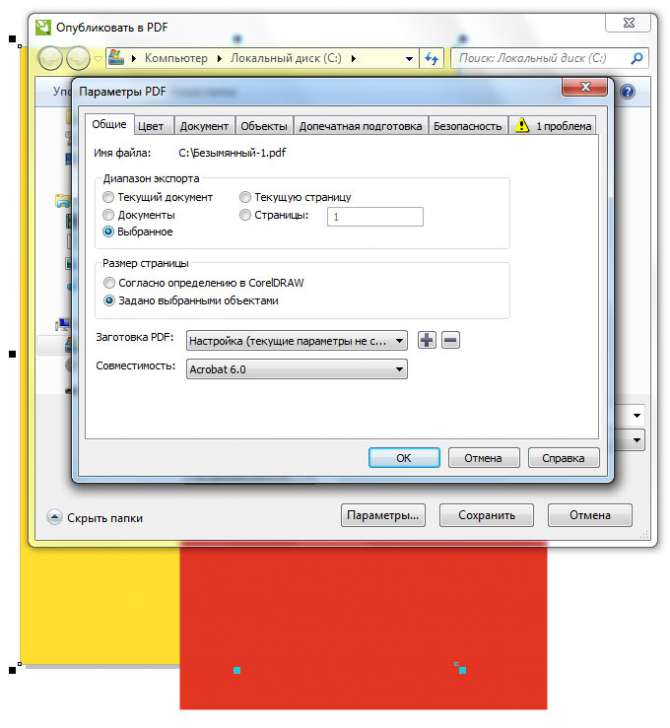

Документ не публикуется в PDF полностью
Евгения / 30.06.2011, 16:23/00:41
Форум:
Версия программы:
15.1.0.486/488/489
В Corel DRAW X5 не могу опубликовать файл в PDF. Сохраняется все кроме фона, фон сохраняется только часть, что делать, подскажите??????
Проверьте диапазон экспорта.
По умолчанию — "Текущий документ". Pdf получается согласно размерам страницы.
Возможно ваш фон выходит за пределы.
Или галочка стоит — "Выбранные". Тогда невыделенные элементы не войдут в Pdf.

Евгения, а чего только 3 раза то вопрос задали? Почему не 10?
Мда... надо и для постов блокиратор дублей писать...
Да и версию корела обновили бы Пакет обновления 3 для CorelDRAW GS X5